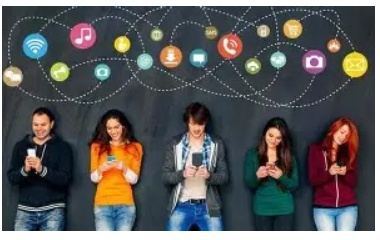

Jueves, 11 de junio de 2026
El impacto de las redes sociales en el tiempo libre de los jóvenes

Hoy en día, casi todos los jóvenes brindamos mucho tiempo al celular y pasamos conectados al internet, lo que ha cambiado por completo lo que hacemos en el día. El tiempo que antes se usaba para salir a la calle, hacer algún deporte o descansar, ahora se invierte revisando aplicaciones.
En primer lugar, pasar tantas horas viendo videos o publicaciones daña la salud física de los estudiantes. Como nos quedamos sentados o acostados viendo la pantalla, dejamos de hacer ejercicio o de jugar algún deporte, y esto hace que tengamos menos tiempo, menos actividad física, mala salud y problemas para dormir (Mayo Clinic, 2022). Muchos prefieren quedarse encerrados en su cuarto con el celular en lugar de salir a caminar o moverse un rato en sus horas libres y convivir con sus amigos y familias.
En segundo lugar, este problema también hace que nos alejemos de las personas en la casa. Cuando un joven pasa todo su tiempo libre en internet, se aísla tanto que ya casi no platica con sus padres ni con sus hermanos (Hospital Sant Joan de Déu Barcelona, 2021). Esto hace que la comunicación en la familia se pierda y las relaciones se vuelvan más frías. Además, estar todo el día conectados esperando ver qué suben los demás genera mucha ansiedad y estrés (Observatorio Nacional de Tecnología y Sociedad, 2022).
En conclusión, las redes sociales sirven para hablar con amigos, pero usarlas sin control nos quita el tiempo para cosas más importantes. Para no seguir perdiendo los momentos en familia ni descuidar la salud, los jóvenes debemos aprender a apagar el celular un rato y organizar mejor nuestros horarios (Programa Oportunidades Fundación Gloria Kriete, 2024). Dejar un rato internet y disfrutar de la vida real es lo mejor para estar bien.
Ver el análisis en YouTube ↗Análisis: “Análisis sobre cómo el uso excesivo de las redes sociales daña la salud física y aleja a los jóvenes de su familia.”
Bibliografías
- Hospital Sant Joan de Déu Barcelona. (2021). Webinar: El impacto de las redes sociales en el desarrollo adolescente [Video]. YouTube. https://www.youtube.com/watch?v=DqicQK8UZ5w
- Mayo Clinic. (2022). Los adolescentes y el uso de las redes sociales. https://www.mayoclinic.org/es/healthy-lifestyle/tween-and-teen-health/in-depth/teens-and-social-media-use/art-20474437
- Observatorio Nacional de Tecnología y Sociedad. (2022). Impacto del uso de las redes sociales en la salud mental de jóvenes y adolescentes. https://www.ontsi.es/es/publicaciones/Impacto-del-uso-de-Internet-y-redes-sociales-salud-mental-jovenes-adolescentes
- UNICEF. (2023). Estado Mundial de la Infancia: Crecer en un mundo digital y el uso del tiempo libre. https://www.unicef.org/es/informes/estado-mundial-infancia-mundo-digital
- Soluciones Digitales. (2020). Jóvenes en el mundo digital [Fotografía]. Blogger.
Código de Honor: “Hago constar que no he dado ni recibido ayuda no autorizada en la realización de esta asignación.”